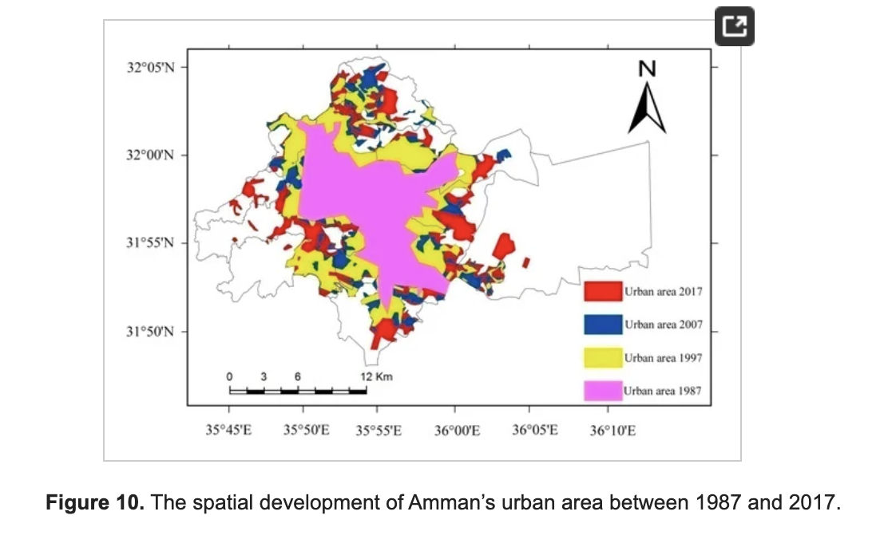
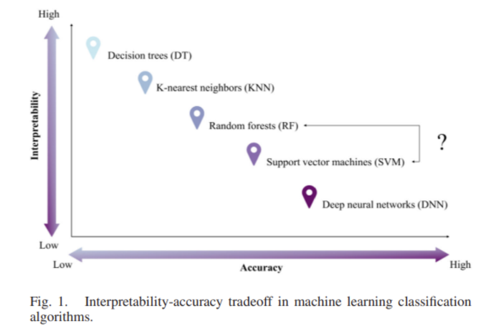

6 Week 6: Classification 1
6.1 Summary
This week, we learned about classification, a machine learning technique, and how it can be applied to EO images. Within remote sensing, classification usually involves the extraction of land use/land cover information from earth observation data. It’s useful for understanding LULC change over time, or looking at the relationship between LULC and other variables such as surface temperature or pollution, susceptibility to hazards.
Classification can be supervised or unsupervised. We also have generic classifier methods and ones that are specific to remote sensing data. They are summarised in this chart I made in Miro below:

6.2 Applications
As mentioned above, classification is useful for understanding LULC change over time, or looking at the relationship between LULC and other variables such as surface temperature or pollution, susceptibility to hazards.
A study done in Amman City, Jordan provides an example of using remote sensing data and classification techniques to inform urban planning in historically data-poor environments (citation, https://www.mdpi.com/2071-1050/11/8/2260). The aim was to understand patterns and causes of urban expansion from 1987 - 2017.
Methodology
They used Landsat images (6 spectral bands) from 1987, 1997, 2007, and 2017 and classified pixels into 4 land use/covers: urban area, vegetation, exposed rocks, and exposed soils. They use the maximum likelihood supervised classification algorithm, however they don’t explain why they chose it. They do however achieve an accuracy rate of above 85% for each image (range is 86.4% - 90.2%), which seems pretty decent!
They then employed a change detection technique between the images for each year. Here is the final output: 
Findings and Discussion
They found that the most rapid rate of expansion occurred during the 1987-1997 period, and both the 1997-2007 and 2007-2017 periods experienced stable growth. They tied these findings to 2 types of population growth. The first is that the Gulf War occurred in 1991, causing a huge influx of Jordanians returning to Jordan from Gulf countries. The second is the 2 major influxes of refugee populations from 1) the invasion of Iraq in 2003 and 2) the civil war in Syria in 2011. What they found was, the most urban expansion occurred after the start of the Gulf war in the first image period. However, despite the population growing significantly from the two refugee influxes, urban expansion continued at a steady rate. The returning Jordanians mostly built private houses on their own land or bought/rented houses , resulting in lots of construction. In contrast, most of the refugees that entered stayed in refugee camps near the border.
They identify that the main type of urban growth in the first period was concentric, expanding mainly occurs along transport infrastructure that extend from the core. The expansion was horizontal as opposed to vertical. In the second and third periods, the expansion was both concentric and multiple nuclei, with new urban centers forming. They also experienced more vertical growth.
What I learned
This paper highlighted the importance of understanding historical and political influences on urban expansion for future planning strategy. It also demonstrated the effectiveness of using landsat imagery with the maximum likelihood algorithm to monitor urban expansion in data poor regions.
6.3 Reflection
Something interesting to me is the trade-off that we have to make between the interpretability and accuracy of classifiers: 
My first instinct would be to choose the model with the highest accuracy, but that’s probably because I’m coming from the tech sector, where it’s common to prioritise accuracy because when the goal is profit, it doesn’t really matter how we get there. It poses a problem when models need to be explained to stakeholders or decision-makers, and is especially problematic when what these models can affect peoples lives in significant ways. For example, when companies sell recidivism models to police departments, or models to predict credit worthiness, determining peoples futures based on what they might do rather than what they have done (aka “data determinism”). Interpretability is necessary to ensure that the model is making accurate and fair predictions.
Within medical research, say for classifying medical diagnoses for example, accuracy is likely more important than interpretability. However, within social science research, it seems that interpretability would have a higher priority because the goal is more oriented towards understanding certain phenomena or why factors drive particular outcomes, rather than simply predicting them.